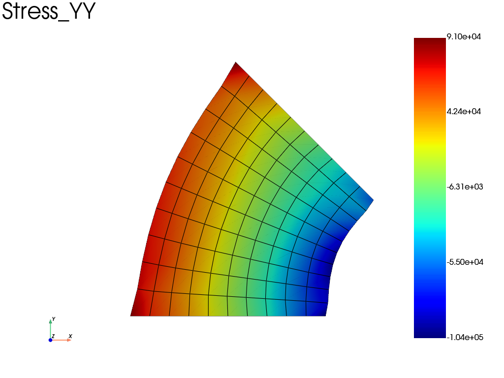

Note
Go to the end to download the full example code.
Rigid tie constraint
Example of a 2D rigid tie. The bottom face of a square is clamped. A rigid body rotation is imposed on the top face.

Iter 1 - Time: 0.20000 - dt 0.20000 - NR iter: 3 - Err: 0.00996
Iter 2 - Time: 0.40000 - dt 0.20000 - NR iter: 3 - Err: 0.00981
Iter 3 - Time: 0.60000 - dt 0.20000 - NR iter: 4 - Err: 0.00475
Iter 4 - Time: 0.80000 - dt 0.20000 - NR iter: 4 - Err: 0.00587
Iter 5 - Time: 1.00000 - dt 0.20000 - NR iter: 4 - Err: 0.00814
import fedoo as fd
import numpy as np
fd.ModelingSpace("2D") # plane strain assumption
NLGEOM = True
E = 200e3
nu = 0.3
mesh = fd.mesh.rectangle_mesh()
material = fd.constitutivelaw.ElasticIsotrop(E, nu, name="ConstitutiveLaw")
wf = fd.weakform.StressEquilibrium(material, nlgeom=NLGEOM, name="wf")
assembly = fd.Assembly.create("wf", mesh)
# node set for boundary conditions
bottom = mesh.find_nodes("Y", mesh.bounding_box.ymin)
top = mesh.find_nodes("Y", mesh.bounding_box.ymax)
pb = fd.problem.NonLinear(assembly)
pb.set_nr_criterion("Displacement", err0=1, tol=1e-2, max_subiter=5)
results = pb.add_output(
"rigid_tie_example", assembly, ["Disp", "Stress", "Strain", "Fext"]
)
pb.bc.add(fd.constraint.RigidTie2D(top))
pb.bc.add("Dirichlet", bottom, "Disp", 0)
pb.bc.add("Dirichlet", "RigidRotZ", -np.pi / 4) # Rigid rotation of the top
pb.nlsolve(dt=0.2, tmax=1, update_dt=True, print_info=1, interval_output=0.2)
# =============================================================
# Example of plots with pyvista - uncomment the desired plot
# =============================================================
# ------------------------------------
# Simple plot with default options
# ------------------------------------
results.plot("Stress", component="YY", data_type="Node", show=True)
# ------------------------------------
# Write movie with default options
# ------------------------------------
# results.write_movie('rigid_tie_example', 'Stress', 'vm', 'Node', framerate = 12, quality = 5)
Total running time of the script: (0 minutes 0.428 seconds)